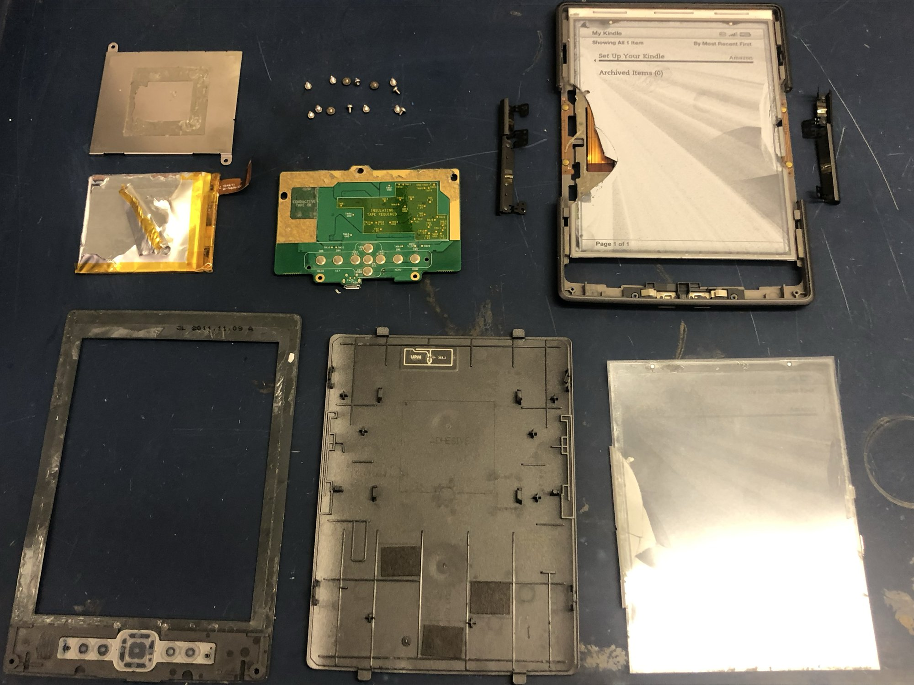
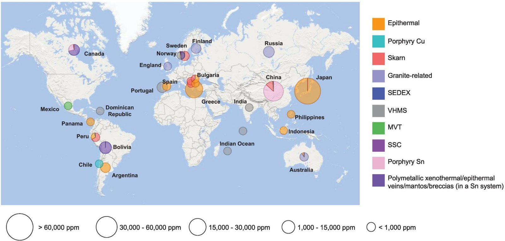

Environmental Impact & Conclusions
Environmental impact
Material recovery and design for disassembly

The Kindle illustrates a broader e-waste problem: valuable materials are not always easy to recover. Our two components show this difference clearly. The battery cover is a separate metal part, while the screen's conductive coating is integrated into a layered display.
The stainless-steel cover was straightforward to remove. Two screws attach it to the frame, and it is not glued to the battery. The foam pad underneath is attached with double-sided tape, but both the pad and tape peeled away in one piece with little tearing. This leaves a metal part that is easy to identify and suitable for recycling. The battery requires more careful handling, since damage during waste processing can cause fires [8].
The screen presents a more difficult separation problem. Our XRF scans did not detect indium in the ITO film, as discussed on the E-ink Screen page. Recovering a metal distributed through a thin coating requires more than removing a discrete part, and our testing could not measure an indium recovery rate.
Indium supply chain
From zinc ore to the screen
Indium is mainly recovered as a by-product of zinc processing. Its principal mineral host is sphalerite (ZnS), where it occurs alongside other elements [10]. The ore is concentrated, commonly through froth flotation, before zinc processing produces indium-bearing residues. Further leaching and purification separate the indium, which can then be recovered as metal through cementation or electrolysis [11, 12]. Refined indium is used to make ITO for transparent conductive coatings [13].
This makes indium supply dependent on both zinc production and the facilities available to recover it. Mejías et al. also identify China as the leading indium refiner and exporter, highlighting potential vulnerability to geopolitical supply disruptions [10]. Recovering indium from mine waste could diversify supply, although the methods reviewed require further development [10]. Mining and refining also carry environmental costs: weathering of indium-bearing mine waste can release indium into water, particularly under acidic conditions [10]. Indium remains a key raw material for ITO-based screens, even as researchers develop transparent conductive ceramic films that use less indium [15]. These studies explain the general supply chain, but do not identify the mine or refinery that supplied our Kindle 4.

Design for disassembly
Removing screws did not release every part
Several components remained attached by glue or double-sided tape after we removed their screws. We questioned why both were necessary, although our testing did not establish the adhesive's additional function.
The screen was especially difficult to remove. We had to break it apart piece by piece, making reuse impossible. The iFixit Kindle 4 Screen Replacement guide describes the same problem: adhesive covers the screen's entire contact surface with the bezel, and removal involves breaking the display into fragments [9]. A broken screen can still be replaced, but an intact display cannot necessarily be recovered using that procedure.
Once the parts were separated, all adhesive residue we encountered came off with light wiping using ethanol. The surfaces were tightly bonded, leaving no accessible gap through which we could apply ethanol before separation.
Indium recovery
Can the coating be recycled?
Indium is recycled from manufacturing scrap, including spent ITO sputtering targets, but discarded screens present a more dispersed waste stream [12]. LCD recycling research describes dismantling and pretreatment, followed by chemical leaching and selective indium separation [13]. These methods are relevant to ITO recovery, but they do not report measured recovery rates for Kindle e-ink displays.
Our teardown showed an additional barrier: the screen required destructive removal, while the stainless-steel battery cover separated cleanly. This extra disassembly work could make screen-material recovery less practical than recycling the cover, although we did not measure how often either component is recycled. Breaking the screen prevented reuse of the display, but does not rule out chemical recovery of its materials.
Recovery also has to justify its own environmental costs. In one LCD study, conventional recycling performed better than a process that added indium recovery because the additional treatment costs outweighed its benefits at the tested concentration [14].
Manufacturer statements
What Amazon offers
Amazon's U.S. mailback program covers shipping and recycling through its certified recycler, Re-Teck, and states that returned devices undergo material reclamation [16]. Its trade-in program also assesses devices for refurbishment and resale, with badly damaged or malfunctioning devices that cannot be reset sent for recycling [17]. However, these disclosures do not specify whether indium from Kindle screens is recovered.
E-ink screens are appealing components for DIY electronics: they remain readable in sunlight and retain an image without continuous power. Soldered’s documentation describes these advantages [18], while its Inkplate boards demonstrate the reuse of recovered Kindle displays [19] in projects such as electronic calendars [20]. This made breaking our screen during removal particularly disappointing. The tightly bonded assembly eliminated the possibility of salvaging it as a working component for another project. Easier separation could preserve that opportunity, extending the display’s useful life before its materials need to be recycled.
Conclusion
We initially assumed that recycling a Kindle would be straightforward: disassemble the device, reuse or recycle the screen, and recover the metals from the frame. Our teardown revealed that our assumptions were completely wrong. While the stainless-steel battery cover separated cleanly and is easy to recycle, removal of the tightly bonded screen required breaking it apart, preventing reuse as a working display. Recovering indium from its thin conductive coating would also require specialized processing, and we could not establish how effectively this is done for Kindle screens. Our suggestion is to redesign the Kindle for easier disassembly, allowing users to recover components for reuse and separate materials for recycling without specialized tools.
All sources
- Cross-sectional diagram of e-ink microcapsules, ResearchGate. researchgate.net
- Lithium-ion battery swelling pressure, Princeton University Spike Lab, paper 103. spikelab.mycpanel.princeton.edu/papers/103.pdf
- Peel force of adhesive foam tape, Force Channel. force-channel.com
- Baldé, C. P. et al. The Global E-waste Monitor 2024. ITU & UNITAR. ewastemonitor.info
- Ansys Granta EduPack, record for AISI 301 stainless steel (composition and mechanical properties).
- Flexure formula, Engineering Core Courses. engineeringcorecourses.com
- Indium tin oxide, Wikipedia. en.wikipedia.org/wiki/Indium_tin_oxide
- U.S. EPA (2021). An Analysis of Lithium-ion Battery Fires in Waste Management and Recycling. epa.gov
- Santens, Francis, and contributors. Kindle 4 Screen Replacement. iFixit. Steps 1 and 5–6 describe the back-cover tape, full-surface screen adhesive, and removal of the screen in pieces; steps 7–8 cover replacement and reassembly. ifixit.com
- Mejías, O., Parbhakar-Fox, A., Jackson, L., Valenta, R., & Townley, B. (2023). Indium in ore deposits and mine waste environments: Geochemistry, mineralogy, and opportunities for recovery. Journal of Geochemical Exploration, 255, 107312. doi:10.1016/j.gexplo.2023.107312
- Alfantazi, A. M., & Moskalyk, R. R. (2003). Processing of indium: A review. Minerals Engineering, 16(8), 687–694. doi:10.1016/S0892-6875(03)00168-7
- Ciacci, L., Werner, T. T., Vassura, I., & Passarini, F. (2019; first published online 2018). Backlighting the European indium recycling potentials. Journal of Industrial Ecology, 23(2), 426–437. doi:10.1111/jiec.12744
- Zhang, K., Wu, Y., Wang, W., Li, B., Zhang, Y., & Zuo, T. (2015). Recycling indium from waste LCDs: A review. Resources, Conservation and Recycling, 104, 276–290. doi:10.1016/j.resconrec.2015.07.015
- Amato, A., Rocchetti, L., & Beolchini, F. (2017). Environmental impact assessment of different end-of-life LCD management strategies. Waste Management, 59, 432–441. doi:10.1016/j.wasman.2016.09.024
- Gómez, M., Xu, G., Li, J., & Zeng, X. (2023). Securing indium utilization for high-tech and renewable energy industries. Environmental Science & Technology, 57(6), 2611–2624. doi:10.1021/acs.est.2c07169
- Amazon. Recycling Your Electronics. Company program description, accessed October 5, 2026. Amazon recycling information
- Amazon / O'Neill, S. Here's what happens to your old devices after you complete your Amazon Trade-in. Company workflow description, accessed October 5, 2026. Amazon trade-in workflow
- Soldered Electronics. Inkplate 6 – Overview. Manufacturer documentation, accessed October 6, 2026. Inkplate 6 overview
- Soldered Electronics. Inkplate 6FLICK – Hardware Design. Manufacturer documentation describing recovered Kindle displays, accessed October 6, 2026. Inkplate display reuse
- Soldered Electronics. Inkplate Projects – Google Calendar. Manufacturer project documentation, accessed October 6, 2026. Electronic calendar project
- Walsh, A., Da Silva, J. L. F., & Wei, S.-H. (2011). Multi-component transparent conducting oxides: Progress in materials modelling. Journal of Physics: Condensed Matter, 23, 334210. arXiv:1101.5720
- González, G. B., Mason, T. O., Quintana, J. P., Warschkow, O., Ellis, D. E., Hwang, J.-H., Hodges, J. P., & Jorgensen, J. D. (2004). Defect structure studies of bulk and nano-indium-tin oxide. Journal of Applied Physics, 96(7), 3912. doi:10.1063/1.1783610
- KnowledgeDoor. Cohesive Energy. The Elements Handbook. knowledgedoor.com
- Ansys Granta EduPack, record for indium (Young's modulus).
- ASM International. ASM Handbook: Metallography and Microstructures. dl.asminternational.org
- Knovel (Elsevier), resource kpCUB00002, p. 257. app.knovel.com
- Knovel (Elsevier), resource kpCUB00002, p. 247. app.knovel.com
- Deformation induced martensitic transformation of metastable stainless steel AISI 301. ResearchGate. researchgate.net